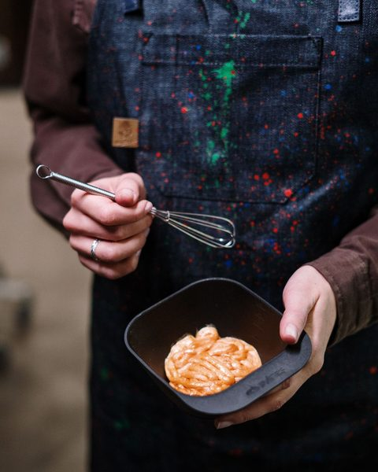
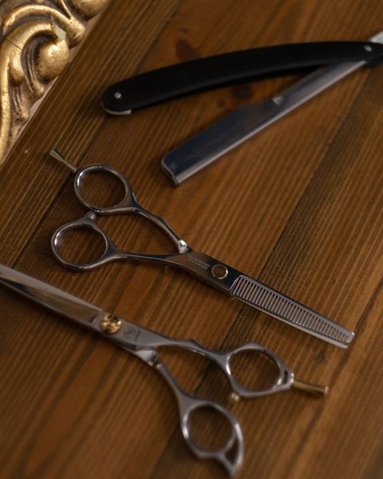
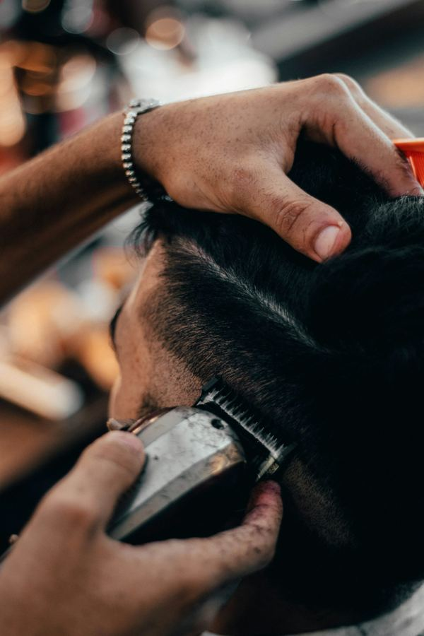
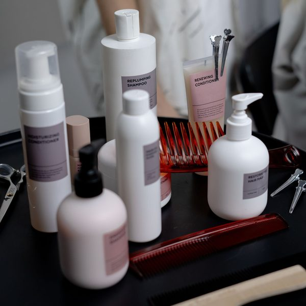
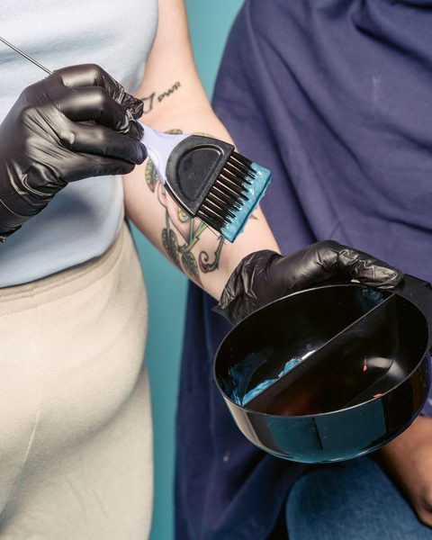
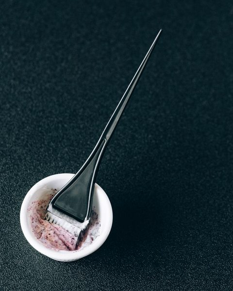
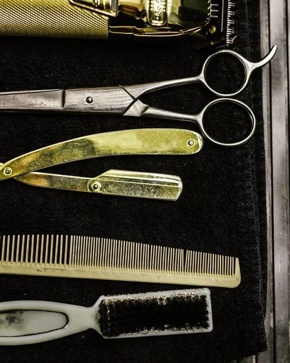
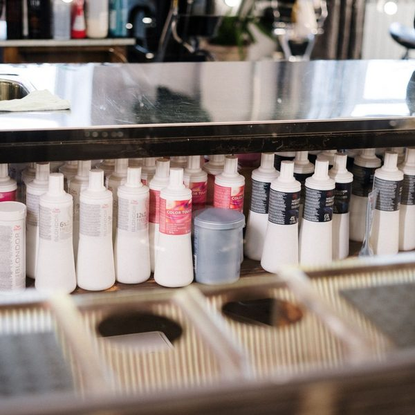

Hair studio · Downtown
Curls and color, done with care.
A two-chair studio in downtown specializing in curly cuts and lived-in color.
Book an appointment
New clients: complimentary 15-minute consultation.

A two-chair studio in downtown specializing in curly cuts and lived-in color.
New clients: complimentary 15-minute consultation.
Every appointment begins with a conversation about your hair, your routine, and how much time you want to spend on it each morning.
Willow & Wave opened in 2019 as a private, two-chair studio on Main Street. Our stylists specialize in dry curl cutting and soft, low-maintenance color that grows out gracefully. Appointments are unhurried, and only one client is in each chair at a time.

Specializes in soft balayage, gray blending, and color correction.
Book with our owner →
Dry cuts for curly and coily hair, cut curl by curl in its natural shape.
Book with our curl specialist →





“The first person who ever cut my curls dry. I finally know what my hair actually wants to do.”
A clientText us if you're running late. After 15 minutes we may need to shorten or reschedule your service.
Please cancel at least 24 hours ahead so someone on the waitlist can take your time.
Start with a complimentary 15-minute consultation, in person or by video.
